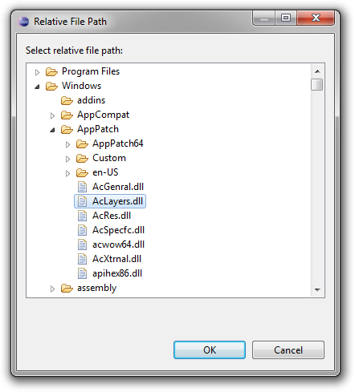
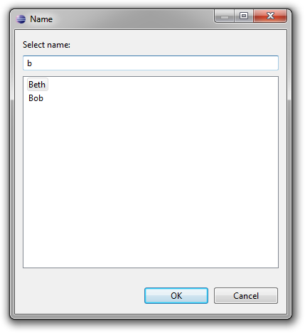
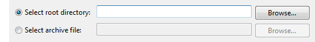
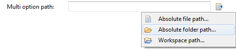

One of the most enduring UI patterns is a browse button next to the text box for selecting among possible values. Very frequently the scenario is to browse for files or folders, but the pattern is more generic than that and has been used to browse for arbitrary items especially when the set of possible values can be large.
In Sapphire, developers are not creating and wiring up individual UI widgets. This makes it possible to implement the browse button pattern at a higher level of abstraction. If a browse action handler is active for a property, a browse button will be automatically created. The framework will even register a keyboard shortcut (Ctrl+L, 'L' is for locate) which can be used to open the browse dialog while focus is on the text field.
Sapphire uses image-based buttons for compactness and to create a more modern look-n-feel. In the following screen capture you can see how the browse buttons appear to the user. Note a tiny browse image in the table cell editor. That's a browse button too.

Sapphire provides a set of annotations that make it easier to deal with file system paths. The developer uses these annotations to specify the semantics of the property and Sapphire automatically adds validation and browsing support.
Consider the case where a property must hold an absolute path to a file that must exist and must have "jar" or "zip" extension. Such a property could be declared as follows:
@Type( base = Path.class )
@AbsolutePath
@ValidFileSystemResourceType( FileSystemResourceType.FILE )
@ValidFileExtensions( { "jar", "zip" } )
@MustExist
ValueProperty PROP_ABSOLUTE_FILE_PATH = new ValueProperty( TYPE, "AbsoluteFilePath" );
Value<Path> getAbsoluteFilePath();
void setAbsoluteFilePath( String value );
void setAbsoluteFilePath( Path value );Based on the above specification, the framework will attach validation that will make sure that the entered path is absolute, that it references a file, that the referenced file exists and that it has the appropriate extension. That happens in the model layer. The UI framework will see these annotations and supply a browse button wired to open the operating system's native file browse dialog pre-filtered to only show jar and zip files.
Similar support is available for absolute folder paths. Just remove @ValidFileExtensions and change @ValidFileSystemResourceType.
Or maybe you are writing an extension to Eclipse IDE and your property needs to hold a workspace path instead of an absolute path... Just replace @AbsolutePath with @WorkspaceRelativePath in the above example. The validation will change to use Eclipse resources API and the native browse dialog will be replaced with the standard Eclipse workspace resources dialog.
Or maybe you need to deal with relative paths, but you have custom requirements for how these relative paths are to be resolved. Sapphire still got you covered. Just implement RelativePathService that returns all possible roots...
@Type( base = Path.class )
@Service( impl = CustomRelativePathService.class )
@ValidFileSystemResourceType( FileSystemResourceType.FILE )
@ValidFileExtensions( "dll" )
@MustExist
ValueProperty PROP_RELATIVE_FILE_PATH = new ValueProperty( TYPE, "RelativeFilePath" );
Value<Path> getRelativeFilePath();
void setRelativeFilePath( String value );
void setRelativeFilePath( Path value );public class CustomRelativePathService extends RelativePathService
{
public List<Path> roots()
{
List<Path> roots = new ArrayList<Path>();
roots.add( new Path( "c:/Windows" ) );
roots.add( new Path( "c:/Program Files" ) );
return roots;
}
}You will still get all the validation that you would get with an absolute path, including validation for existence which will try to locate your path using the roots returned by your base paths provider. On the UI side you will get a custom browse dialog box that lets you browse for resources in all the roots simultaneously. This can be very powerful in many contexts where the system that UI is being built for searches for the specified file in a set of defined locations.
Another common scenario is the case where the value must come from a list of possible values not necessarily tied to something specific like file system resources. For instance, consider the case where a property must reference an entity name from the set of entities defined elsewhere.
Simply implement a PossibleValueService and attach it to the property...
@Service( impl = CityNamePossibleValuesService.class )
ValueProperty PROP_CITY = new ValueProperty( TYPE, "City" );
Value<String> getCity();
void setCity( String value );public class CityNameValuesProvider extends PossibleValuesProviderImpl
{
protected abstract void fillPossibleValues( SortedSet values )
{
// Your logic goes here.
}
} If you find that in your scenario the set of possible values is static you can use the @PossibleValues annotation instead. This annotation lets you specify the set of possible values right in the annotation instead of implementing a custom service.
Or maybe your scenario calls for a property to draw its possible values from another property in the model. The @PossibleValues annotation still has you covered. It lets you specify a path through the model where possible values should be harvested.
@PossibleValues( property = "/Contacts/Name", caseSensitive = false )
ValueProperty PROP_ASSISTANT = new ValueProperty( TYPE, "Assistant" );
Value<String> getAssistant();
void setAssistant( String value );Regardless of whether you use @PossibleValues annotation or implement a custom PossibleValuesService, you will get validation that will check that the specified value is in the set of possible values. Additional attributes are available on all three of these annotations that let you customize the validation. For instance, you can change the problem severity to a warning or even disable validation completely. You can even specify whether the comparison should be case sensitive. On the UI front, you will get browse button wired to the standard list item selection dialog.
Sapphire even integrates with JDT to support properties that reference classes or interfaces visible to a given Java project. The developer uses the supplied JavaTypeName class as the type for a value property and then tunes the semantics using @JavaTypeConstraint and @MustExist annotations. Sapphire takes care of the rest. You get validation for type existence, kind of type (interface, class, etc.) and even whether type derives from another type. On the UI side, you get a browse button wired to JDT's type selection dialog.
In the following example, the property is specified to take a name of a non-abstract class that must extend AbstractList class while also implementing Cloneable interface.
@Type( base = JavaTypeName.class )
@Reference( target = JavaType.class )
@JavaTypeConstraint( kind = JavaTypeKind.CLASS, type = { "java.util.AbstractList", "java.lang.Cloneable" } )
@MustExist
ValueProperty PROP_CUSTOM_LIST_CLASS = new ValueProperty( TYPE, "CustomListClass" );
ReferenceValue<JavaTypeName,JavaType> getCustomListClass();
void setCustomListClass( String value );
void setCustomListClass( JavaTypeName value );Sapphire browse handling support is extensible to support cases that do not fit one of the above molds. To do this, you create a custom class that extends SapphireActionHandler. You can then register your browse action handler globally (to activate under a condition that you specify) or locally for a specific property editor in the UI definition. The second case is more common.
Here is an example:
<property-editor>
<property>Photo</property>
<action-handler>
<action>Sapphire.Browse</action>
<impl>PhotosCatalogBrowseActionHandler</impl>
</action-handler>
</property-handler>One variant of the browse button pattern has baffled UI writers for years. In some cases, the semantics of the property require the use of more than one browse dialog. For instance, consider the case where the property can take an absolute path to an archive file or a folder. No established convention exists for how to handle this case and developers have tried a number of different options. Here are a few examples from Eclipse itself.
Sapphire adopts the convention of using a drop-down menu from the browse button when multiple browse action handlers are active concurrently. Here is what that looks like:
Currently, there are no model annotations that can fully describe the complex semantics of such scenarios. The developer must register the browse action handlers in the UI definition. Validation should be done in a custom validator class attached via @Validator annotation.
Here is the UI definition from the above screen capture. All the system-provided browse action handlers that activate when certain annotations are used are also available for direct reference from the UI definitions as can be seen in this example.
<property-editor>
<property>MultiOptionPath</property>
<action-handler>
<action>Sapphire.Browse</action>
<impl>AbsoluteFilePathBrowseActionHandler</impl>
<param>
<name>extensions</name>
<value>jar,zip</value>
</param>
</action-handler>
<action-handler>
<action>Sapphire.Browse</action>
<impl>AbsoluteFolderPathBrowseActionHandler</impl>
</action-handler>
<action-handler>
<action>Sapphire.Browse</action>
<impl>WorkspaceRelativePathBrowseActionHandler</impl>
<param>
<name>extensions</name>
<value>jar,zip</value>
</param>
<param>
<name>leading-slash</name>
<value>true</value>
</param>
</action-handler>
</property-editor>